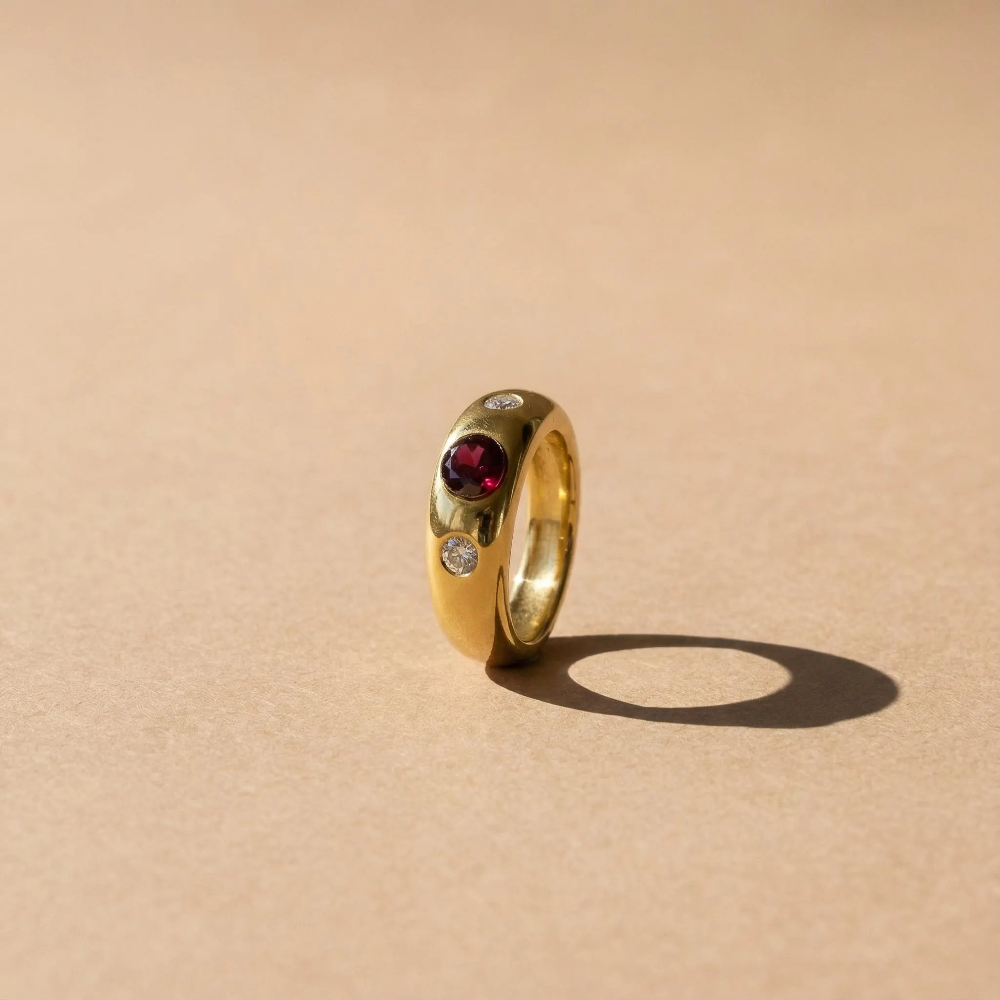

Özel Günler
Nişan ve Düğün İçin Mücevher Seçim Rehberi
11 Nisan 2026
Evlilik süreci, hayatın en anlamlı dönüm noktalarından biridir. Söz kesiminden düğün gününe kadar uzanan bu yolculukta mücevher, yalnızca bir aksesuar değil; sevginin, bağlılığın ve yeni bir başlangıcın somut ifadesidir. Bu rehberde, nişan ve düğün sürecinin her aşaması için mücevher seçiminin inceliklerini ele alıyoruz.

1. Söz Yüzüğü: İlk Adım
Söz kesimi, Türk kültüründe evlilik sürecinin resmi başlangıcıdır. Söz yüzüğü, genellikle sade ve zarif bir tasarım tercih edilen bir parçadır.
Geleneksel tercih: İnce, sade bir altın bant en klasik seçenektir. 14 ayar, hem dayanıklılığı hem de renk sıcaklığıyla söz yüzüğü için sıklıkla tercih edilir.
Modern yaklaşım: Küçük bir taş detayı veya minimal bir tasarım farkı, söz yüzüğünü kişiselleştirebilir. Rose altın veya mat bitişli yüzeyler, klasik altının yanında farklı bir estetik sunar.
Beden seçimi: Yüzük bedeni, rahat bir kullanım için kritik önem taşır. Gün içinde parmak kalınlığı değişebileceğinden, ölçümün günün farklı saatlerinde yapılması önerilir. Belirsiz durumlarda kuyumcunuzdan bir beden ölçüm halkası isteyebilirsiniz.
2. Nişan Yüzüğü: Taahhüdün Simgesi
Nişan yüzüğü, evlilik vaadinin simgesi olarak özel bir yere sahiptir. Geleneksel olarak söz yüzüğünden daha gösterişli olan nişan yüzüğü, genellikle taşlı bir tasarım olarak tercih edilir.
Taş seçimi: Pırlanta (elmas), dayanıklılığı ve parlaklığıyla nişan yüzüklerinde yaygın olarak tercih edilen bir taştır. Ancak safir, zümrüt veya yakut gibi renkli değerli taşlar da anlamlı ve kişisel bir alternatif sunar. Taş seçiminde partnerin tarzı ve renk tercihleri belirleyici olabilir.
Montür (yuva) tasarımı: Taşın altına nasıl yerleştirildiği, hem görünümü hem de güvenliği etkiler. Tektaş (solitaire) montür klasik ve zamansız bir seçenekken; halo (taşın etrafını saran küçük taşlar) ve pave (bant üzerine dizilmiş taşlar) gibi stiller daha göz alıcı bir görünüm yaratır.
Metal seçimi: Sarı altın sıcak ve geleneksel bir hava verirken, beyaz altın daha modern ve taşın parlaklığını ön plana çıkaran bir görünüm sunar. Rose altın ise romantik ve farklı bir tercih olarak öne çıkar.
3. Alyans: Birliğin Sembolü
Alyanslar, evliliğin en kalıcı sembolüdür — her gün, her an takılan ve yıllar boyunca aşınmaya dayanması gereken parçalardır.
Dayanıklılık öncelik: Alyans, günlük kullanım için tasarlanmış olmalıdır. Bu nedenle 14 veya 18 ayar altın, dayanıklılık ve estetik dengesi açısından yaygın tercihlerdir. 22 ayar altın daha yumuşak olduğundan, yoğun günlük kullanımda çizilmelere daha açıktır.
Tasarım uyumu: Alyanslar genellikle çift olarak tasarlanır. Kadın ve erkek alyanslarının birbirleriyle uyumlu olması, bir bütünlük hissi yaratır. Ancak her iki partnerin de kendi zevkine uygun bir tasarım seçmesi konfor açısından önemlidir.
İç yazı: Alyansın iç yüzeyine tarih, isim veya kısa bir not kazıtmak, kişisel bir dokunuş katar. Bu detayı sipariş sırasında kuyumcunuzla konuşabilirsiniz.

4. Gelin Takısı: Düğün Gününün Parıltısı
Düğün günü, gelinin takılarıyla tamamlanan görsel bir bütünlüktür. Gelin takısı seçiminde şu noktalar göz önünde bulundurulabilir:
Gelinlik uyumu: Takı seçiminde gelinliğin yaka kesimi, kumaşı ve detayları belirleyicidir. Straplez bir gelinlik, dikkat çekici bir kolye ile tamamlanabilirken; dantel detaylı bir yaka, daha sade bir takı tercihini gerektirebilir.
Denge: Büyük, dikkat çekici bir kolye tercih ediliyorsa, küpe ve bilezik daha sade tutulabilir — ya da tersi. Amaç, takıların birbirleriyle ve gelinlikle uyumlu bir bütün oluşturmasıdır.
Konfor: Düğün günü uzun ve yoğun bir gündür. Takılarınızın rahat olması, gece boyunca rahatsızlık vermemesi önemlidir. Ağır kolye ve küpeler, saatler sonra yorucu olabilir.
Set veya ayrı parçalar: Geleneksel olarak kolye, küpe ve bilezik seti tercih edilir. Ancak farklı parçaları harmanlayarak kişisel bir kombinasyon oluşturmak da giderek yaygınlaşan bir yaklaşımdır.
5. Düğün Altını ve Takı Geleneği
Türk düğün geleneğinde takı töreni önemli bir yere sahiptir. Bu geleneğin bazı pratik yönleri:
Takı tercihi: Düğün takısı olarak çeyrek, yarım ve tam altın yaygındır. Bunların yanı sıra bilezik, kolye ve küpe gibi mücevherler de takı olarak takılabilir.
Planlama: Beklenen takı miktarını ve türünü önceden planlamak, düğün sonrası düzenleme açısından kolaylık sağlar. Bazı çiftler, takı yerine altın veya nakit tercih edildğini davetiyede belirtmeyi tercih eder.
Muhafaza: Düğünde takılan mücevherlerin düğün sonrası güvenli bir şekilde saklanması önemlidir. Her parçanın fotoğrafını çekmek ve bir envanter listesi hazırlamak, sigorta ve muhafaza açısından faydalıdır.
6. Yıldönümü ve Anma Parçaları
Evlilik yolculuğu düğünle bitmez; her yıldönümü, yeni bir anı biriktirme fırsatıdır. Bazı geleneksel yıldönümü mücevher önerileri:
1. yıl: Altın bir kolye veya bilezik — ilk yılın sıcaklığını simgeler.
5. yıl: Safir detaylı bir parça — sadakati ve derinliği temsil eder.
10. yıl: Pırlanta — on yılın gücünü ve parlaklığını yansıtır.
25. yıl (Gümüş Yıldönümü): Gümüş veya beyaz altın bir parça.
50. yıl (Altın Yıldönümü): Özel bir altın parça — yarım asırlık birlikteliğin kutlaması.
Elbette bunlar geleneksel önerilerdir; her çiftin kendi hikayesini yansıtan kişisel bir seçim yapması her zaman anlamlı olacaktır.

7. Pratik Öneriler
Nişan ve düğün mücevheri alırken aklınızda bulundurmanız gereken bazı pratik noktalar:
Erken başlayın: Özellikle özel sipariş veya kişiselleştirilmiş parçalar için en az birkaç hafta öncesinden planlama yapın. El yapımı parçaların üretimi zaman alır.
Birlikte seçin: Sürpriz bir teklif planlamıyorsanız, mücevheri birlikte seçmek hem pratik hem de keyifli bir deneyim olabilir. Partnerin tarzını ve tercihlerini en iyi yansıtan parçayı birlikte bulabilirsiniz.
Bütçeyi belirleyin: Mücevher alışverişine başlamadan önce bir bütçe belirlemek, hem seçenekleri daraltır hem de gereksiz stres yaratmaz. Unutmayın: mücevherin değeri fiyatıyla değil, taşıdığı anlamla ölçülür.
Garanti ve bakım: Alışveriş yaptığınız kuyumcunun garanti, bakım ve onarım hizmetleri sunup sunmadığını öğrenin. Yıllar boyunca kullanacağınız bir parça için satış sonrası destek önemlidir.
Sonuç
Nişan ve düğün mücevherleri, hayatınızın en özel anlarının somut hatıralarıdır. Doğru seçim, hem o anın güzelliğini tamamlar hem de yıllar sonra elinize aldığınızda aynı duyguları yeniden yaşatır. Ayardan tasarıma, taştan işçiliğe — her detay, bu özel parçaların sizin hikayenizi anlatmasını sağlar.
Koleksiyonumuzu incelemek için Koleksiyon sayfamızı ziyaret edebilirsiniz.